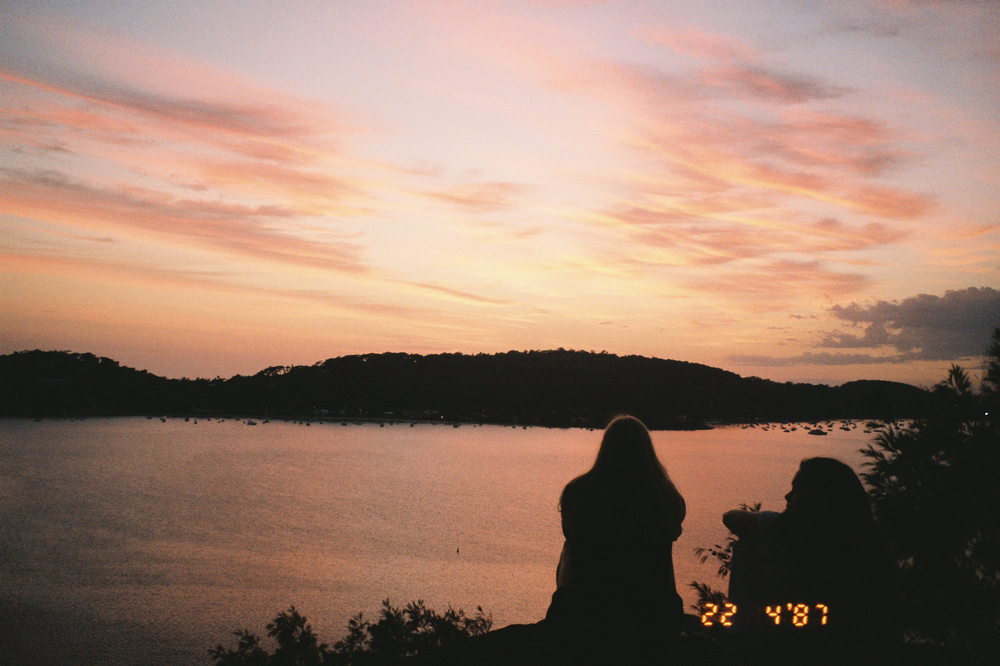
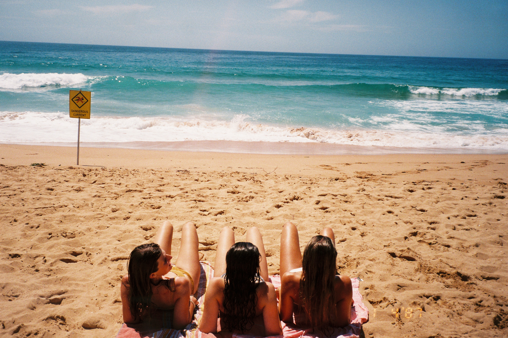
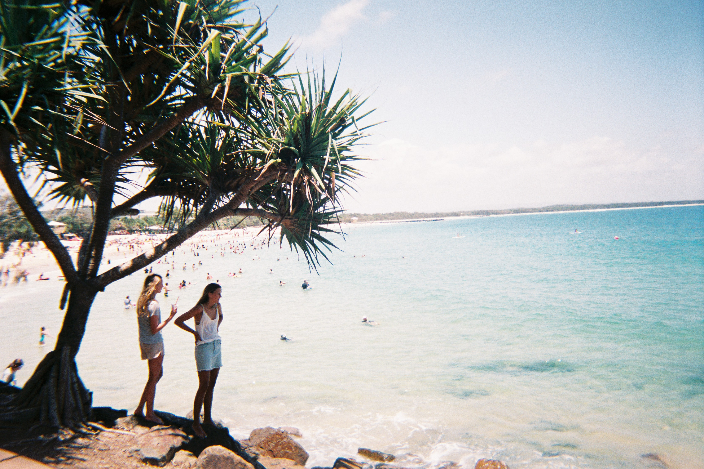
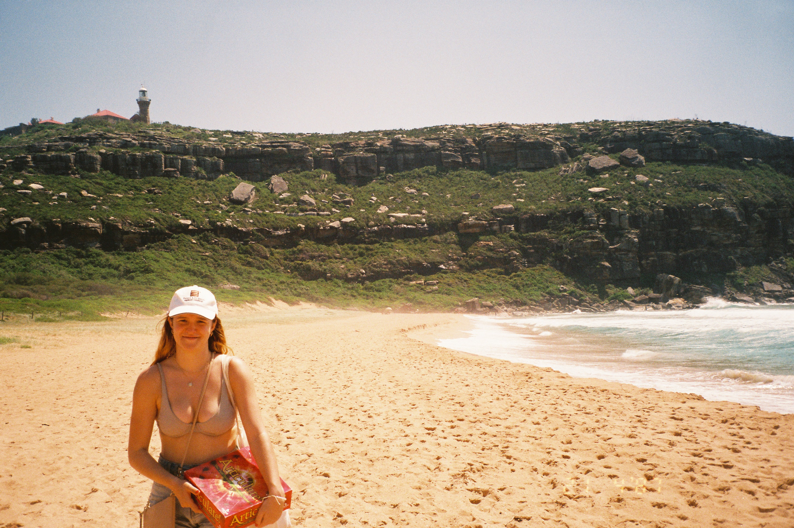
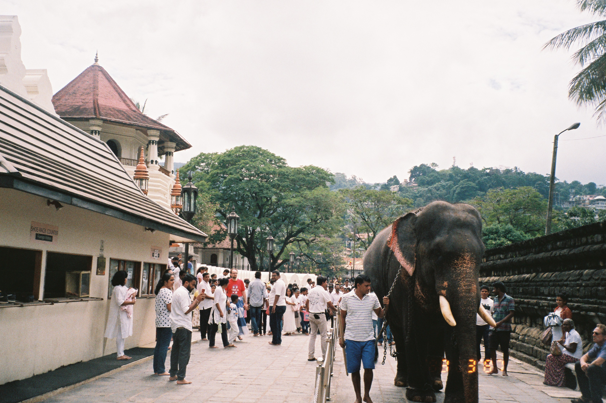
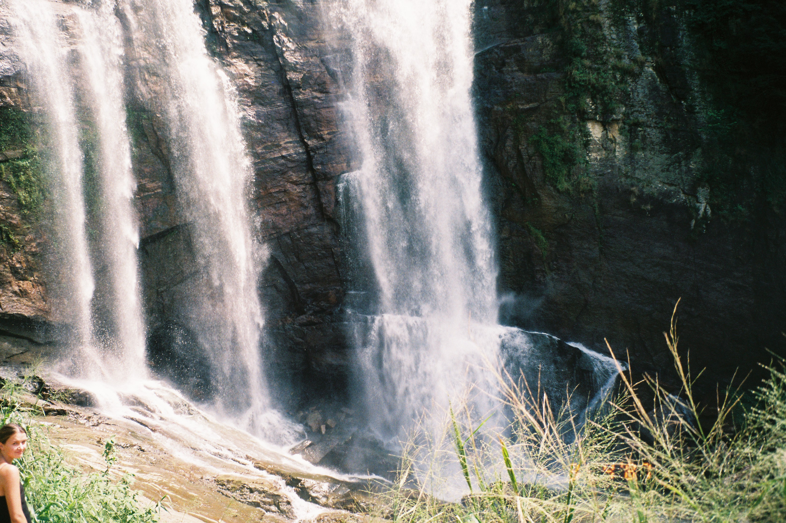
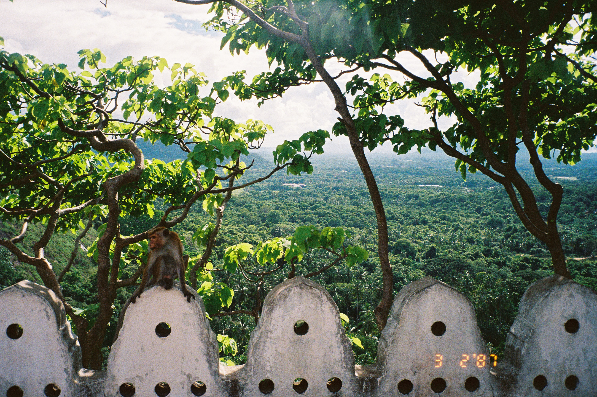
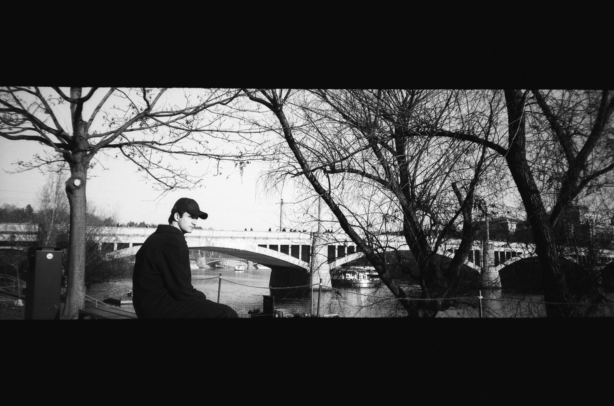
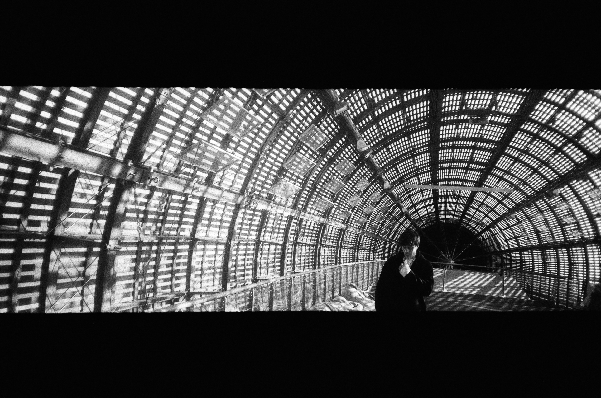
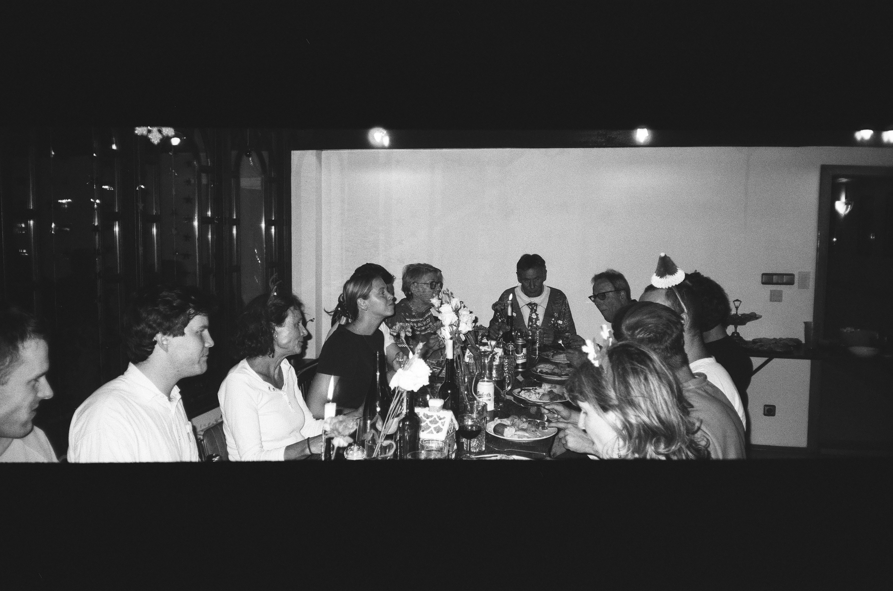

September 2025
Four days in Barcelona, tracing a small stretch of the Catalan coast.
Long afternoons unfolded between sun-warmed rock and sea, punctuated by sangria at dusk with the Melbourne girls. The beachfront still carried traces of another era, with weathered seventies shutters fading elegantly into the landscape. There was an ease to the place.
Unhurried, lightly sunburnt, and content in the company of the sea.
The Pentax rendered it all with surprising tenderness. Although, on closer inspection, a recurring finger did sneak into a couple of the frames.



Palm Beach 2026
Exploring the NSW coast close to home.
Small road trips along familiar roads. Fresh fish cooked on camp stoves by the beach. Salt in the air and long afternoons spent following the coastline. The kind of holiday that asks very little and feels part of my identity. The Canon Sure captures some precious shots.
A reminder that some of the most precious journeys are the ones closest to home.



September 2025
Two weeks in Sri Lanka. From Ella to Colombo and down to Mirissa.
What remains most vividly is the landscape. Dense and unruly. Jungle pressing against the railway line. Hills veiled in mist. Long train journeys through humid air and impossibly green valleys. The island possessed a sense of abundance that seemed to spill into everything.
The food was exceptional. Fragrant curries shared slowly. Fruit gathered from roadside stalls. Meals that felt deeply rooted in place.
I returned with a set of blue and white ceramic bowls. Their intricate patterns recalled motifs found across the island. They now sit quietly at home. A small reminder of jungle air, open train windows, and afternoons that seemed to stretch endlessly toward the sea.



Christmas 2025
Prague at Christmas. The coldest season I can recall, yet one defined by an unexpected warmth.
A collection of family, friends from home and friends from Cambridge gathered in the magnificent city. Gothic facades emerged through the winter fog. Streets glowed softly beneath the early darkness. It was a rare opportunity to spend Christmas with an unconventional collection of people, each bringing their own traditions, habits, and stories to the table.
The black and white Nikon D200 preserved much of it. Fleeting expressions, candlelit dinners, and the texture of winter lights. Small moments suspended in time and made enduring through the photograph.